1) Konsep Tumpukan (Stack) di Flutter:
Navigator adalah Widget pengelola rute (halaman) yang bekerja seperti tumpukan kartu. Push (Maju) digunakan untuk meletakkan halaman baru di tumpukan teratas. Pop (Mundur) digunakan untuk menghapus atau menutup halaman teratas untuk kembali.
2) Constructor & Passing Data:
Untuk mengirim data dari Halaman A ke Halaman B, Halaman B harus menyiapkan variabel dan Constructor. Variabel Final digunakan sebagai tempat penampung data, misalnya untuk title. Required digunakan sebagai penanda bahwa data ini wajib diisi saat berpindah layer.
Langkah pertama adalah membuat file baru bernama detail_transaction_screen.dart. Kemudian siapkan penerima parameter title dan amount, deklarasikan variabel final, dan tampilkan data pada UI menggunakan teks.
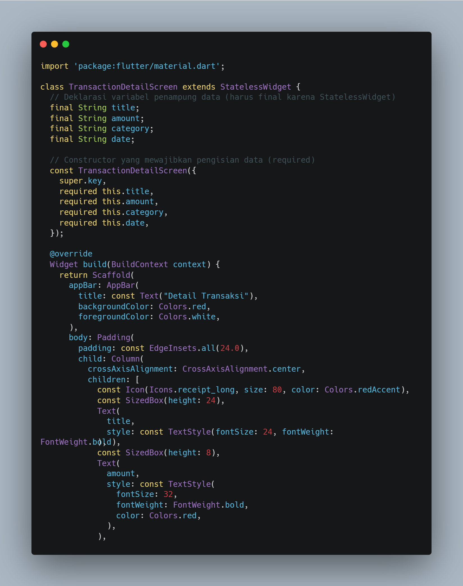
Membuat widget Flutter bernama TransactionDetailScreen yang menampilkan detail transaksi dengan AppBar merah, ikon struk, judul, dan jumlah uang berwarna merah tebal.
Buka kembali Dashboard. Pada widget ListTile daftar transaksi, tambahkan fungsi onTap. Gunakan Navigator.push dengan Material Page Route dan isi data constructor (title & amount) sesuai dengan data baris yang diklik.
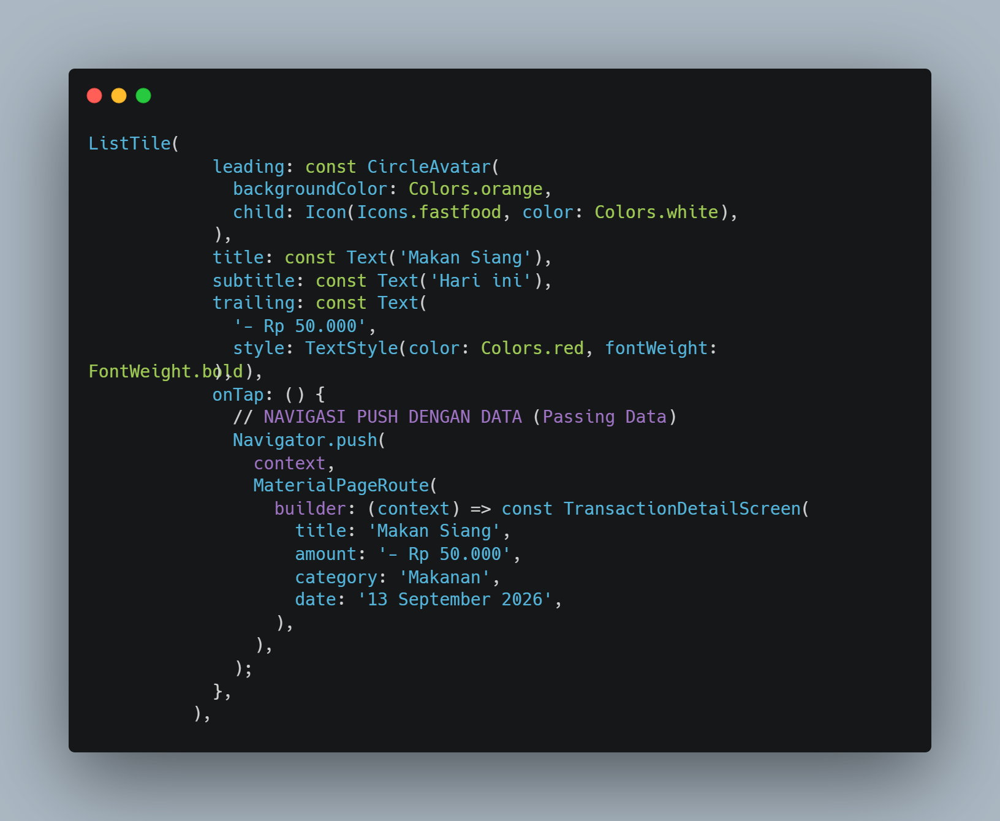
Membuat ListTile transaksi dengan ikon makanan, judul "Makan Siang", tanggal "Hari ini", dan nominal "- Rp 50.000". Saat ditekan, tile ini akan membuka halaman detail transaksi dengan data yang dipassing lewat Navigator.push.
Kembali ke file add_transaction_screen.dart(Modul 3). Kita ingin formulir otomatis tertutup dan kembali ke Dashboard setelah mengklik Simpan.
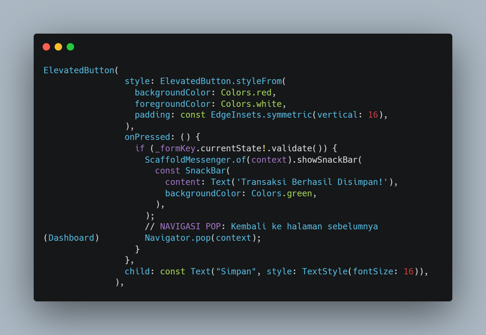
Membuat sebuah tombol simpan menggunakan ElevatedButto dengan gaya latar merah dan teks putih. Saat ditekan, tombol akan memvalidasi form menggunakan formKey. Jika valid, akan muncul SnackBar hijau bertuliskan "Transaksi Berhasil Disimpan!" lalu aplikasi akan kembali ke halaman sebelumnya menggunakan Navigator.pop(context).
Sekarang daftar transaksi di Dashboard bisa di-klik dan akan membuka detail yang berisi data lengkap. Tombol "Panah Kiri" otomatis muncul di AppBar berkat penggunaan Navigator.push Teks judul dan harga akan menyesuaikan dengan baris yang diklik.
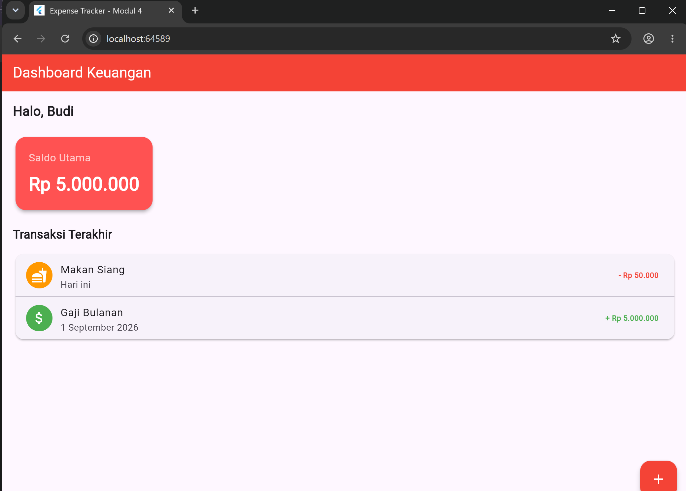
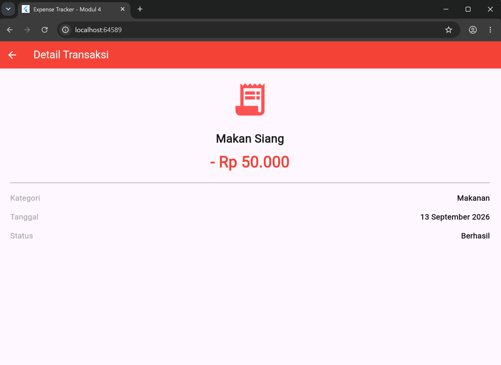
1. lib/main.dart
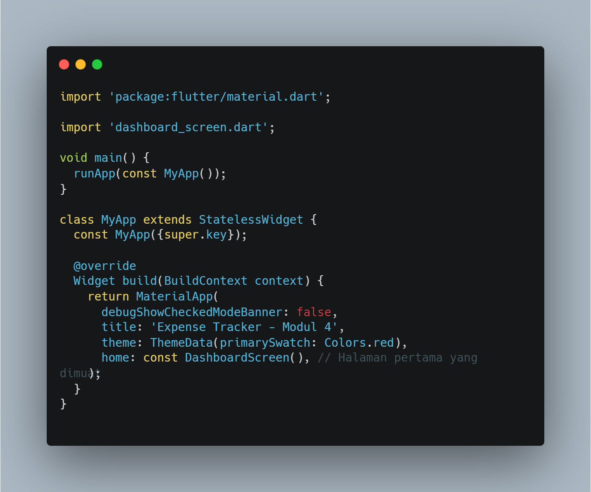
2. lib/dashboard_screen.dart
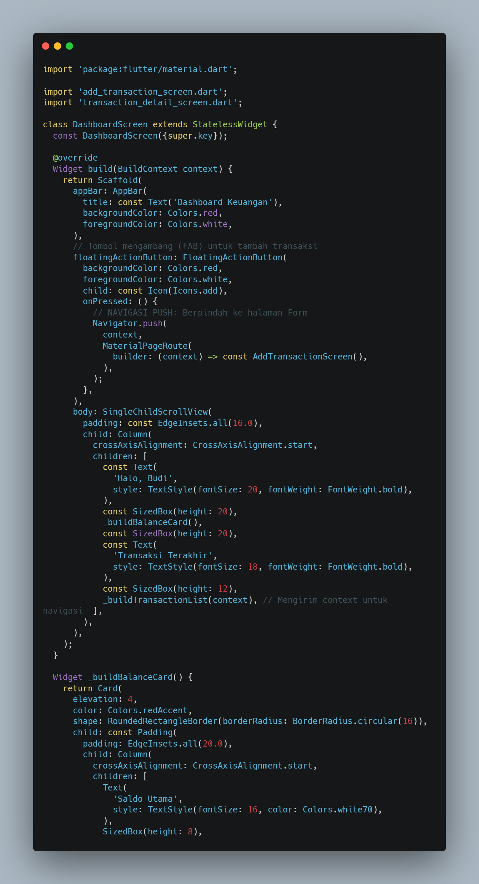
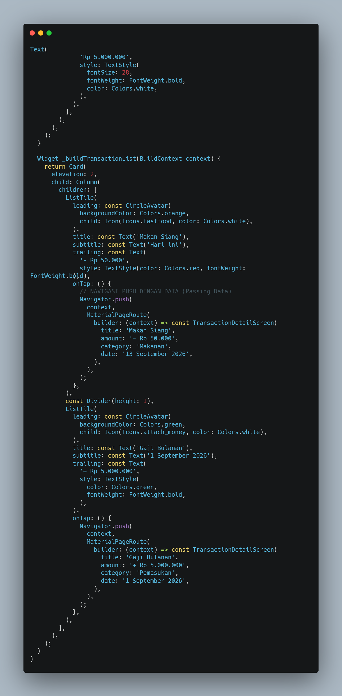
3. lib/add_transaction_screen.dart
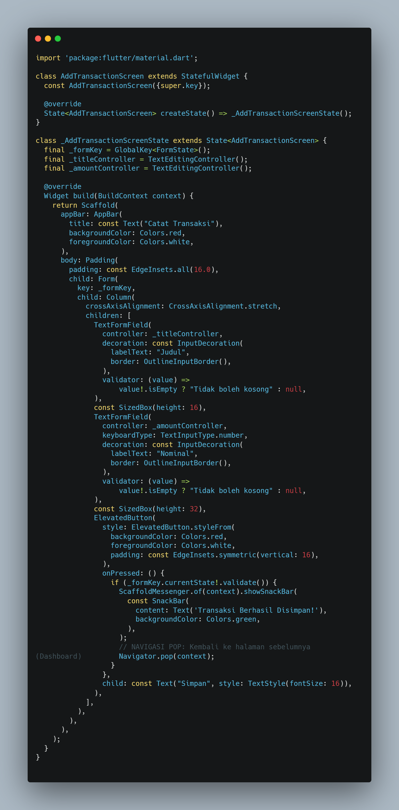
4. lib/transaction_detail_screen.dart
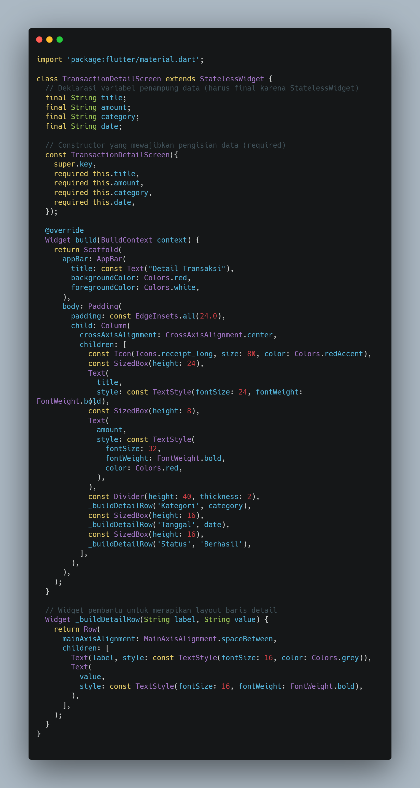
Input Tanggal
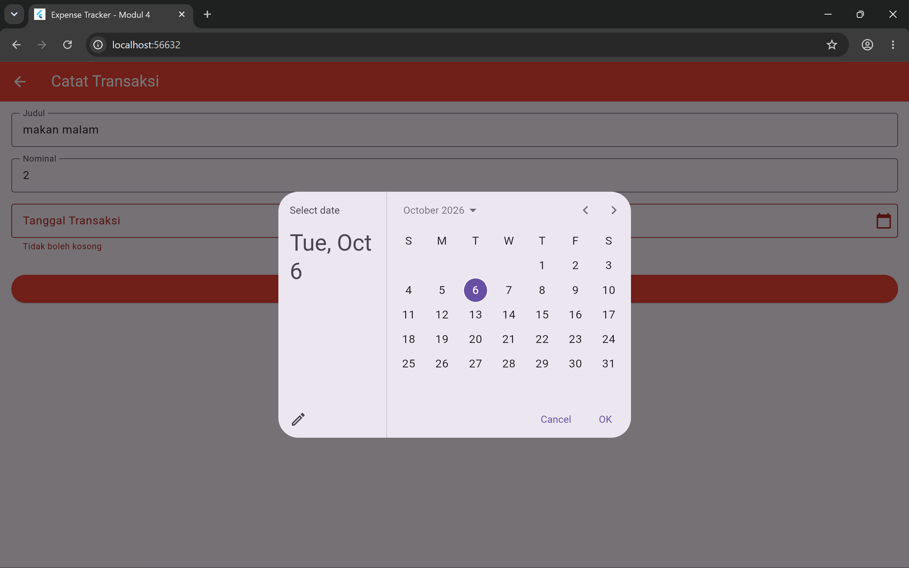